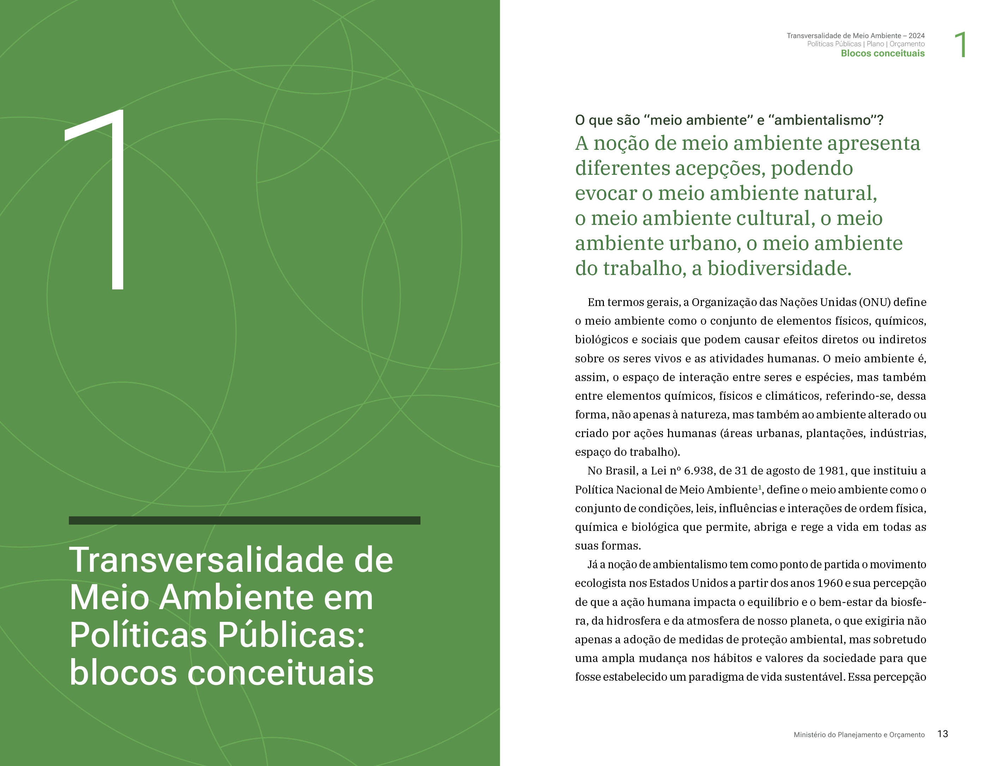
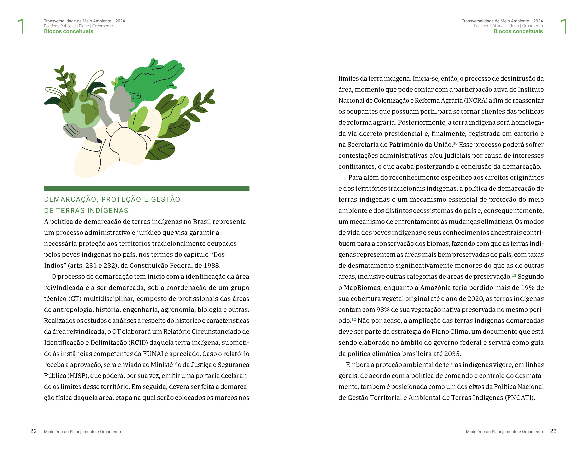
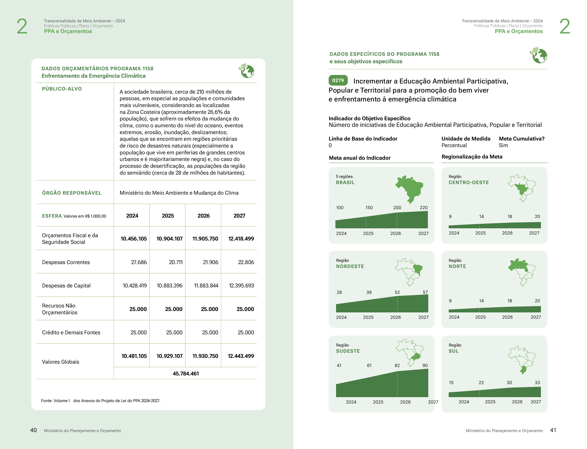
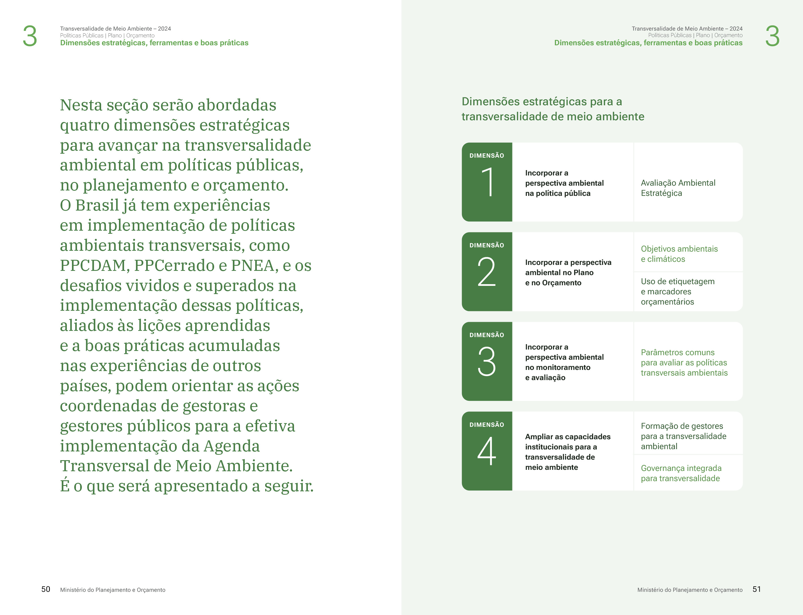
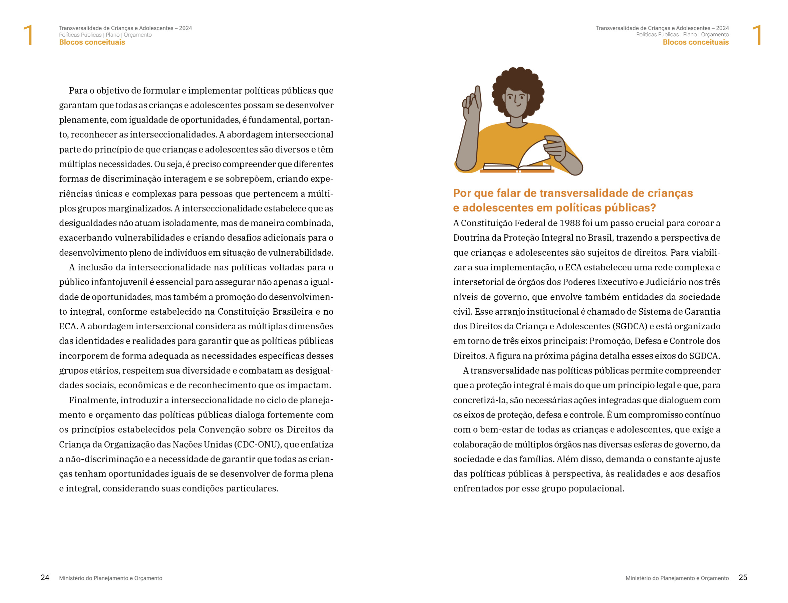
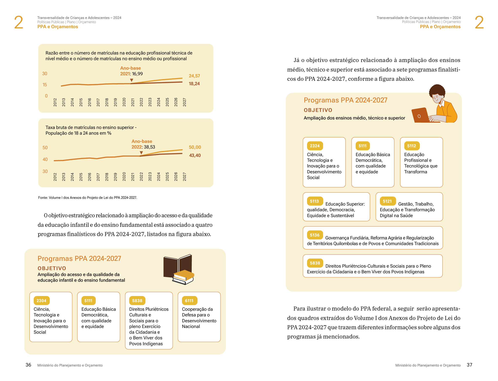
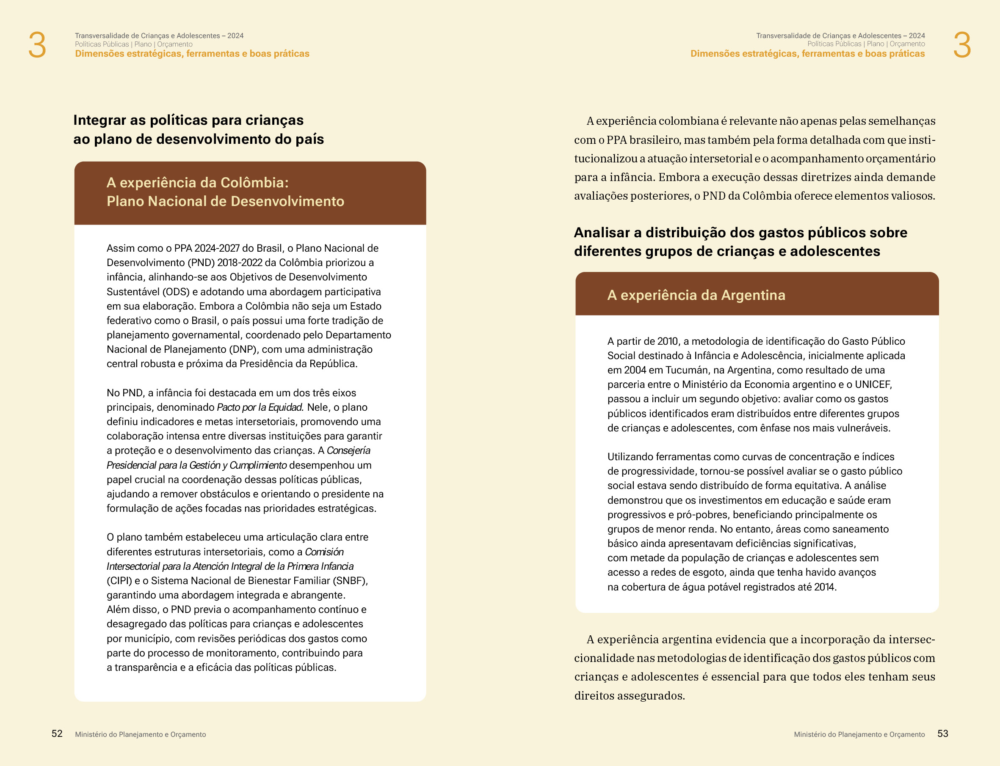
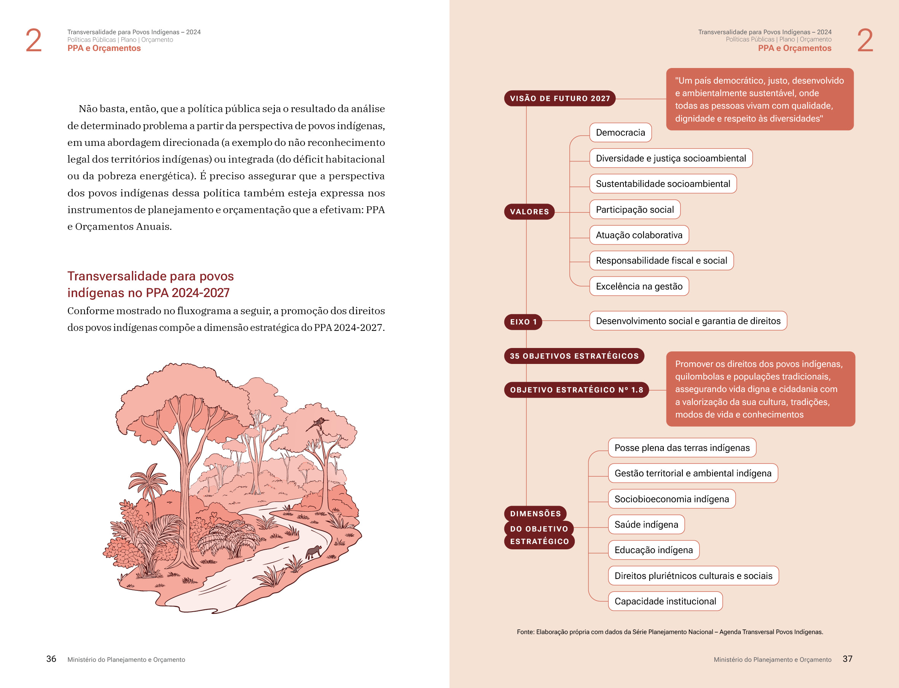
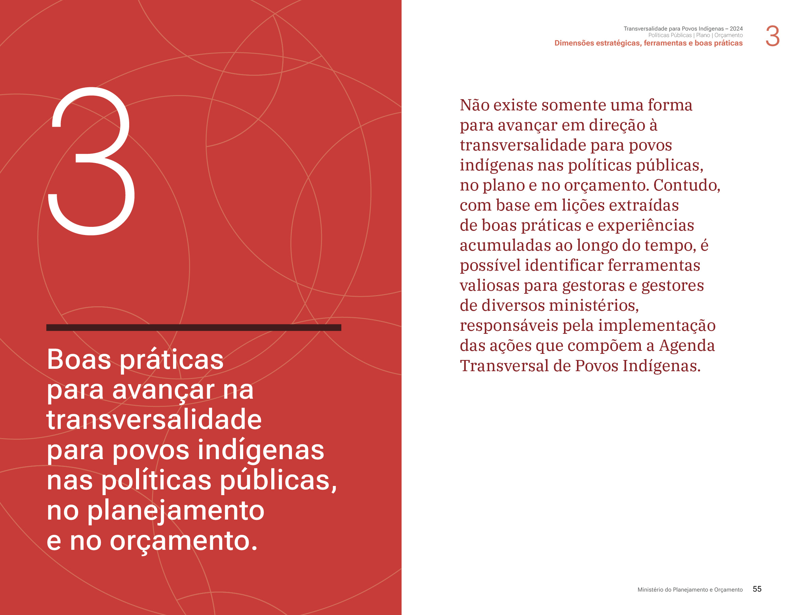

Books
Publicações, livros e guias institucionais. Em colaboração com o Estúdio Nono em 6 cartilhas sobre Transversalidade de Políticas Públicas para o Governo Brasileiro Federal e o BID (Banco Interamericano de Desenvolvimento).









